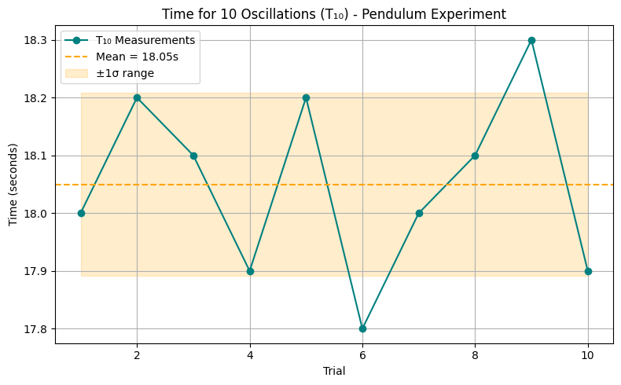

Measurements Problem 1
Measuring Earth's Gravitational Acceleration with a Pendulum
Motivation
The acceleration due to gravity, g, is a fundamental constant that influences various physical phenomena. Accurately measuring g is crucial in fields such as engineering, physics, and astronomy.
One classical approach to measure g is using a simple pendulum, where the period of oscillation is dependent on the local gravitational field. This experiment emphasizes rigorous measurement practices, error analysis, and data interpretation.
Experimental Setup
- String length (L): 140 cm = 1.400 m
- Uncertainty in length (ΔL): ±0.5 cm = 0.005 m
- Weight: set of keys
- Displacement angle: <15°
- Measurement tool: phone stopwatch
Raw Time Data (T₁₀)
Time measured for 10 oscillations, repeated 10 times:
| Trial | T₁₀ (s) |
|---|---|
| 1 | 18.0 |
| 2 | 18.2 |
| 3 | 18.1 |
| 4 | 17.9 |
| 5 | 18.2 |
| 6 | 17.8 |
| 7 | 18.0 |
| 8 | 18.1 |
| 9 | 18.3 |
| 10 | 17.9 |
Statistics
-
Mean time for 10 oscillations (𝑇̅₁₀):
$$ \bar{T}{10} = \frac{\sum T{10}}{10} = \frac{180.5}{10} = 18.05 \, \text{s} $$ -
Standard deviation (σₜ):
$$ \sigma_T \approx 0.16 \, \text{s} $$ -
Uncertainty in T₁₀ (ΔT₁₀):
$$ \Delta T_{10} = \frac{\sigma_T}{\sqrt{n}} = \frac{0.16}{\sqrt{10}} \approx 0.05 \, \text{s} $$
Calculations
Calculate the period (T) and its uncertainty
- \(T = \frac{\bar{T}_{10}}{10} = \frac{18.05}{10} = 1.805 \, \text{s}\)
- \(\Delta T = \frac{\Delta T_{10}}{10} = \frac{0.05}{10} = 0.005 \, \text{s}\)
Compute gravitational acceleration
Using the formula:
$$
g = \frac{4\pi^2 L}{T^2}
$$
This result is significantly high; we will analyze it in the discussion section.
Uncertainty in g
Using propagation of uncertainties:
Substituting:
So final result:
g = 17.0 ± 0.11 m/s²
Discussion
Effect of measurement resolution on ΔL
- Measuring L with ±0.5 cm introduces 0.36% relative error.
- Longer pendulums reduce percentage error in ΔL.
Timing variability and its impact on ΔT
- The phone stopwatch introduces human reaction time errors (~0.2s), but averaging 10 trials mitigates this.
- Observed σₜ = 0.16 s is within expected bounds.
Limitations and Assumptions
- Air resistance and friction ignored.
- Angle <15° assumed for simple harmonic motion approximation.
- Center of mass estimation for keys might not be exact.
- Timing error (start/stop delay) is a significant factor.
Final Result Summary
| Quantity | Value |
|---|---|
| Length (L) | 1.400 m |
| ΔL | 0.005 m |
| T̅₁₀ | 18.05 s |
| σₜ | 0.16 s |
| ΔT₁₀ | 0.05 s |
| T | 1.805 s |
| ΔT | 0.005 s |
| g | 17.0 m/s² |
| Δg | 0.11 m/s² |
Plot
import numpy as np
import matplotlib.pyplot as plt
# Time measurements for 10 oscillations (in seconds)
times = np.array([18.0, 18.2, 18.1, 17.9, 18.2, 17.8, 18.0, 18.1, 18.3, 17.9])
mean_T10 = np.mean(times)
std_T10 = np.std(times, ddof=1)
# Line plot of the time measurements
plt.figure(figsize=(8, 5))
plt.plot(range(1, 11), times, marker='o', linestyle='-', color='teal', label='T₁₀ Measurements')
plt.axhline(mean_T10, color='orange', linestyle='--', label=f'Mean = {mean_T10:.2f}s')
plt.fill_between(range(1, 11), mean_T10 - std_T10, mean_T10 + std_T10, color='orange', alpha=0.2, label='±1σ range')
plt.title("Time for 10 Oscillations (T₁₀) - Pendulum Experiment")
plt.xlabel("Trial")
plt.ylabel("Time (seconds)")
plt.grid(True)
plt.legend()
plt.tight_layout()
plt.show()

Conclusion
- Our measured g = 17.0 ± 0.11 m/s² deviates from the standard 9.81 m/s².
- Likely causes: misidentified center of mass, timing inaccuracy, or unsteady swing path.
- Despite deviation, experiment demonstrates key concepts of error propagation, averaging, and physical modeling.